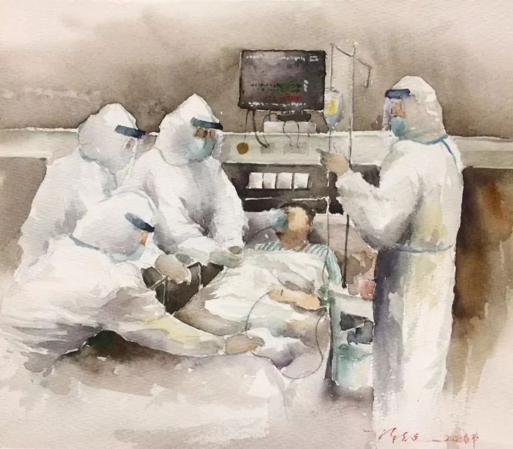
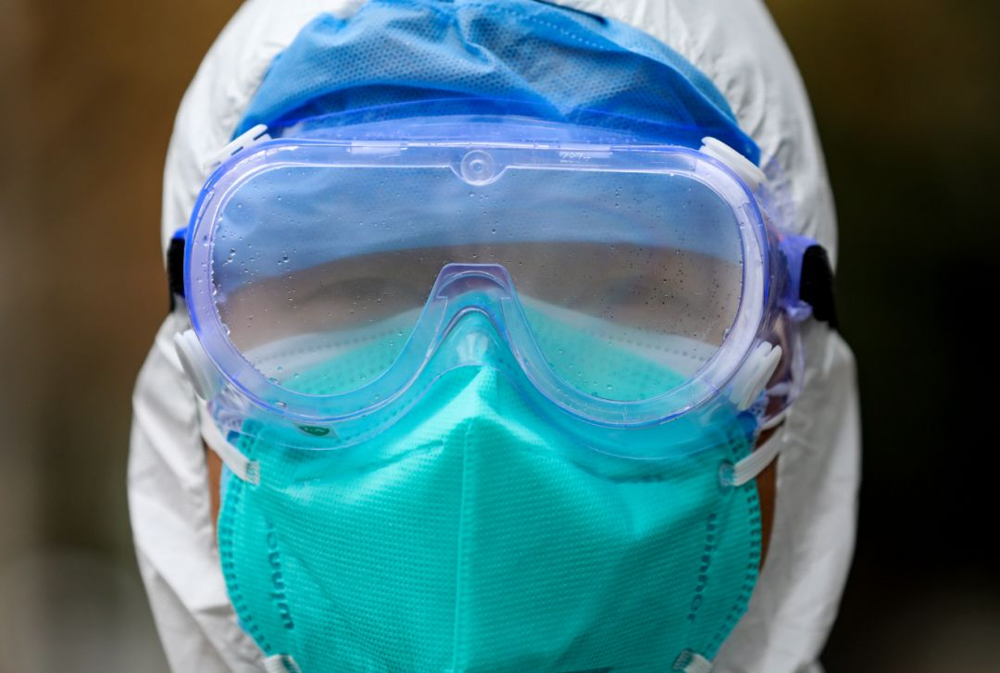
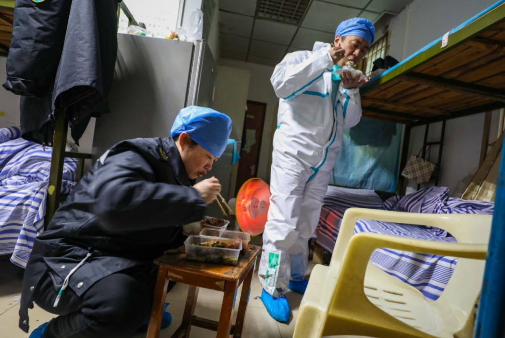
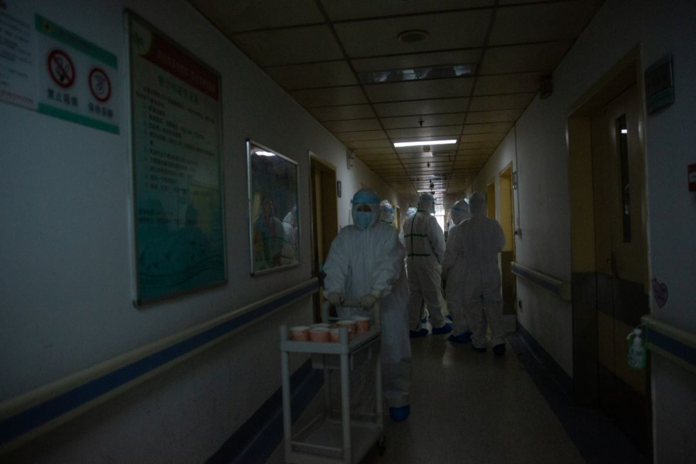

武汉城外的重负：地县乡三级抗疫遭遇的百万返乡潮 | 深度报道
原文链接 备份链接 记者/魏晓涵 实习记者/陈威敬 编辑/刘汨 宋建华 孝感市第一人民医院的医生拆下文件袋作为保护面罩 年初三下午5点，王隆和同事在湖北襄阳去往河南新乡的路上，已经连续开了7个小时车。目的地有一家防护服的生产厂，称可以为他 …
“我不害怕，我们是专业的医务人员。我相信我们能战胜这次疫情。就是想起家人，我……”桐医生突然哽咽了起来。我们已经在电话里聊了半小时她的工作。她本来还在不停地跟我开着玩笑，可提到“家”这个字的时候，她的情绪突然急转直下。我有点慌了，说了好几声“喂喂喂”，电话那头却安静了好几分钟。
她终于又开始出声：“这几天我很压抑，但我不能在家人面前哭，怕他们担心；也不能在护士面前哭，护士的年纪小，我得给他们做个榜样。”
插画 | 陈志远
到今天为止，她已经连续十五天没见过自己的孩子了。桐医生是广东佛山某个基层医院中医科的主治医师，武汉封城以后，广东省启动重大公共卫生事件一级响应，她所在的医院也临时组织了一个24人的防疫工作小组，进行发热病人的初级筛选工作。其中包括18名护士和6名医生，囊括了全院每个科室的精干力量，就连骨科、外科也派出了同事支援。她是队伍中的成员之一，从大年初一开始，整个工作小组进入隔离状态，没有人再回过家。
她只是一个非常普通的医生，既不是武汉传染病房的一线人员，也不是最危重病房的医生。在全国一线医务人员的浩瀚大海中，她只是最不起眼的一滴海水。她的喜怒哀乐都是如此平凡，但是在这场不平凡的战役中，她的故事也是千万人的故事。
以下是她的自述。

口述 | 桐医生
作者 | 喵葵

判断他是不是医务人员
要看他膀胱能力好不好
走进24小时灯火通明的发热门诊大厅，已经是深夜十点半了。但我必须抓紧时间，才能在规定的时间内抵达我的工作区，跟下晚班的同事完成交接。
整个发热门诊的面积不过两百平左右，但是要从门口进入我的工作区域，需要通过三道关卡：清洁区、缓冲区和隔离区。首先我要在清洁区穿日常工作服、戴上第一层口罩和手套。再进入缓冲区，戴上第二层口罩和手套，并换上防护服。戴两层口罩是因为当时N95断货了，如果有了N95戴一层就够了。最后进入隔离区，穿隔离衣并带上防护目镜。
每完成一个动作，都要进行一次手部消毒。整套流程分成二十几个步骤，要进行十几次消毒，全部完成至少耗时半小时以上。不能漏掉任何步骤，稍有不慎，便会对无菌更衣间造成污染。
很多同事的双手都因过多的消毒变白了。即便穿防护服的流程很繁琐，但这段时间没有一个同事会因此耽误交接班，每个人到岗都很准时，这是这几天最让我觉得感动的事情。
凌晨11点，我全副武装地进入工作区，打开电脑查看工作文件，我们每天都有新的内容需要学习，包括新型肺炎的症状、诊断标准等等。为了保证通风，发热门诊没有安装取暖装置。晚上天气很冷，我想喝点热水，但刚拿起杯子我就放下了。因为从现在开始直到明天早上8点下班，在长达9小时的时间里，我都不能去厕所。

因为工作需要，工作时间必须戴上护目镜，寒冷的冬日里，护目镜上总隔着一层水雾。（高星 摄）
由于防护服是一次性的，每去一次厕所都要换一次防护服，这就等于要重新走一遍进入工作区域的流程，为了节省这个时间，几乎所有的医生在上班时间内都不会去厕所。我们只是佛山的一个基层医院，主要负责对发热病人做出初步甄别和筛选，工作强度远远低于在武汉定点医院工作的医生，但是我们仍然只能在交接班时换下防护服。而在武汉工作的一线医生，每天的接待量是我们的几十倍。所以他们干脆在防护服里穿上纸尿裤，节省上厕所的时间。
我们医院也会给医生发纸尿裤，但是我很抗拒，就宁愿不吃不喝不上厕所。我们执行三班倒的流程，白班的时间是从早上8：00到下午5：30，如果坚决不穿纸尿裤的话，憋尿将成为一个巨大的挑战。有一次我快下班了，护士过来问我，你真的不去厕所啊？我打了个尿颤，说我不去，还能忍。我们经常拿这个开玩笑，比如在交接班的时候，交班的人说我现在又饿又累，接班的人就会来一句：还尿急。然后两个人很有默契地大笑。
在中国，医生有一个不成文的共识，判断一个人是不是医务人员，第一看他磅胱好不好，第二看他吃饭快不快。就算是平时出诊，我也很少在上班时间去厕所，因为病人多而医生少，去几次厕所就没法准时下班了。所以憋尿的能力是长期锻炼出来的。
更重要的是，我们的库存一直在不断减少，我们一天有6个人值班，至少要消耗6套防护服，12个N95口罩。我们医院不是定点医院，除了发热门诊以外，其他科室也在同步运行。但其他科室都尽量把防护服和眼罩都留给一线工作人员。

远征 摄
他们没有办法分到防护服，只能穿白大褂上班。没有护目镜，他们发挥创意自制防护面罩。放射科的男同事使用废旧的X光片，绑上两根绳子，垫上海绵就可以了。而妇产科的女同事做得最漂亮，她们使用的材料是透明的塑料文件袋，这样的防护面罩可以代替护目镜阻挡飞沫。
这几天我对自己的磅胱功能还是比较满意。每个班我都只用了一套防护服，没有浪费任何物资。
不止在抗疫时期
随时待命是医生的工作常态
但是不断袭来的饥饿和口渴却折磨着我，直到凌晨两点，我仍然非常清醒。晚上没有病人的时候，我们可以在值班室的床上躺一下，但我睡不着。我已经连续两夜通宵值班了，倒不觉得累，只是上班上得有点麻木。如果没有这次疫情，我应该会和我的两个孩子一起站在高耸的澳门塔上俯瞰碧蓝的海湾，看码头上的灯火逐一被黑夜点亮。
事实上，我在接到被抽调到发热门诊的通知之前，已经连续上了四十几天班。其实医务人员是没有节假日概念的。正常的话，我们是按照轮班制上班。因为我们科室最近人手不够，每周的双休日变成了单休日。我为了攒出大年初一到初四的假期，就利用仅有的单休日帮同事代班。
一直到1月23日，武汉封城的警报拉响，广东省启动一级响应。我们医院也迅速做出了反应，在两天之内将发热门诊升级改造完毕，并从全院各科室抽调医务人员，组成过年期间的抗疫工作小组。我在这个医院工作了九年，现在是中医科的主治医师，研究生专业就读的是呼吸内科，所以成为了本科室最合适的人选。我当天就退掉了酒店和行程，老公非常支持我的工作，只说了一句，你好好工作，我来带孩子。
突然取消休假对医生来说是司空见惯的事情，我们家人早就习惯了我的工作状态。医生的下班时间都必须保持随时待命的状态，每年广州发生登革热、甲流等疫情的时候，我们都会去其他门诊支援，就算是平时，如果我的病人突然身体出现问题，我也需要在半小时内抵达医院现场。
对疫情的响应一启动，整个医院都像进入了战争状态。护士长是一个四十多岁的女强人，她当时两天两夜都没回家，承受的压力最大，医院的每个部门都要跟她对接。大年初一发热门诊正式启用，分出了三个相对独立的区域，墙上贴好了详细的流程，所有的物资配置到位。
我在中医科的岗位上一直工作到除夕，大年初一就到发热门诊报道。这些日子值班，特别饿的时候就会想起大年三十吃到的年夜饭，真是美味啊。当时我并不知道，第二天等待自己的会是隔离。

高星 摄
他就站在楼下朝我挥手
但是我怎么都看不清他的表情
接到隔离通知就是在大年初一，我去发热门诊报道的当天。疫情的战场瞬息万变，我们每个人都没有心理准备。大年初一是我和老公的十周年结婚纪念日，大年初二是我儿子的生日，本来计划好的庆祝仪式，现在都要取消了。就连随身衣物都是家人收拾好送到宿舍楼下的。我们被隔离在医院宿舍里，步行5-10分钟就可以走到发热门诊。
随着疫情的不断升级，家里人的担心也与日俱增。但是我很懂得怎么对待家人的担心。我经常给孩子发我穿防护服的照片，问他们，你们看妈妈像不像天线宝宝？我告诉我爸妈，我们在全医院防护最到位的工作间。迄今为止，全广东也没有医务人员被感染。
我还会经常故意跟老公说：马云已经给我们买了保险啦，轻症感染可以拿两万赔偿，还有14天假期。轻症感染就像普通感冒一样好治，很划算啦。重症还能拿到10万。我老公笑我无聊，说不理我了。其实他知道我在装疯卖傻。
有一天我上班的时候，五岁的女儿哭着给我打电话，我一看视频里，她的手被门夹了，都变黑了。我忍住泪，小声跟她说我在上班不能回家，就挂断了电话。还好有丈夫帮她处理好伤口，等到我能回复电话的时候，家人都已经入睡了。
被隔离以后，我每天都会挑状态最好的时候给家人打电话、发微信。但我很少跟家人视频。因为我照镜子的时候，发现我的整个脸都肿了，长期被口罩勒着，本来就敏感的皮肤开始出红疹子，很多同事都跟我一样，靠吃抗过敏药上阵。我老公不是那种会甜言蜜语的人，他发现以后没有说什么，从家里开车过来给我送来了一堆护肤品。
他送过来的时候我正在楼上，但是他只能送到楼下的保卫处，我不能下楼，只能在四楼的窗台上看着他，他在下面朝我挥手，但我看不清楚他的表情。过了一会儿他开车走了，我还在窗前看了很久。
那一瞬间，我真的挺想家的。
抗疫期间
泡面是医生最好的朋友
那天我听到隔离区非常喧闹。有病人在大厅辱骂，你们没有医德！他们是一家五口，有武汉的旅行史，在进入佛山时被警察发现小孩子体温异常，因此被送到我们医院等待排查。但大人坚持认为孩子没有生病，不肯配合筛查。恰好那天隔离区患者特别多，他们等了一个小时，有点不耐烦了。
我当时在清洁区值班，病人还不算多，一联想起最近的伤医事件我就非常紧张，不停跟领导汇报现场状况。不一会儿领导通知了保安、警察，经过沟通以后按照他们的意愿，将他们送到上级医院进行治疗。
这件事情解决了，可我们还是会很紧张。虽然大部分病人都能理解医生的辛苦，但是哪怕是万分之一的风险对于医生来说都是不可承受的。

所幸，至今我们医院还没有发现任何的阳性病例。国家出台政策，给予我们一线工作人员每天200元-300元的补助。我们不是为了这个钱来加班，但这笔钱让我们觉得很受用，政府为医护人员真的做了很多。
天空渐渐亮起来，已经到了早上8点了，我可以下班了。接下来我将迎来五十多天来的第一个休息日。在我被隔离的第一天，老公给我拿了一箱泡面到宿舍。我没想到，这箱泡面是我隔离期间最大的安慰。
网上有一张特别火的照片，武汉医生的年夜饭是泡面和蛋黄派，大众很心疼我们医生。其实就算送热食给我们，在上班时间我们也没办法吃。一是为了节省时间，避免上厕所。二是避免吃饭造成污染，浪费本来就紧缺的物资。我们在三班倒的状态下，经常赶不上食堂的饭点，我们医院地点比较偏僻，过年期间本来就不好叫外卖，如果没有泡面，我们可能一整天都吃不到热食。只有泡面可以随时想吃就吃，还不怕坏。因此抗疫期间泡面成了我们最好的朋友。
下班回到宿舍，吃泡面就像一个仪式。我先把手进行消毒，再洗个热水澡，用含氯的消毒液浸泡我所有的衣服。然后我再煮上一个泡面，哧溜一声，热腾腾的汤进入胃里，真的特别幸福。

⊙文章版权归《三联生活周刊》所有，欢迎转发到朋友圈，转载开白请联系后台。未经同意，严禁转载至网站、APP等。
原文链接 备份链接 记者/魏晓涵 实习记者/陈威敬 编辑/刘汨 宋建华 孝感市第一人民医院的医生拆下文件袋作为保护面罩 年初三下午5点，王隆和同事在湖北襄阳去往河南新乡的路上，已经连续开了7个小时车。目的地有一家防护服的生产厂，称可以为他 …
原文链接 备份链接 经济观察网 记者 张晓晖 在这次始自武汉、蔓延至全国的新型冠状病毒肺炎疫情中，华中科技大学同济医学院附属同济医院（以下简称“武汉同济医院”）是武汉最早收治非冠病患的几家医院之一。 武汉同济医院历史悠久，其1900年由同 …
原文链接 备份链接 春节期间，街边摆摊卖走亲戚用礼品盒的越来越少，仅有的几个摊主都戴着口罩。一位摊主介绍：“今年来买东西的少了，路上的人也少了。”说完话，他下意识紧了紧鼻头的口罩。 全文3623字，阅读约需7分钟 距离武汉900公里的河 …
原文链接 备份链接 祁立说现在最大的困难，是发热门诊的就诊人数过多。而一线医务工作者最需要的，是能让患者根据规范的指南分级诊疗，减轻发热门诊和隔离病房不必要的压力。整个采访，他没有表达恐慌和焦虑，只希望传递客观、真实、有价值的信息。 记 …
原文链接 备份链接 ********** *****春节期间，街边摆摊卖走亲戚用礼品盒的越来越少，仅有的几个摊主都戴着口罩。**********一位摊主介绍：**********“今年来买东西的少了，路上的人也少了。**********” …